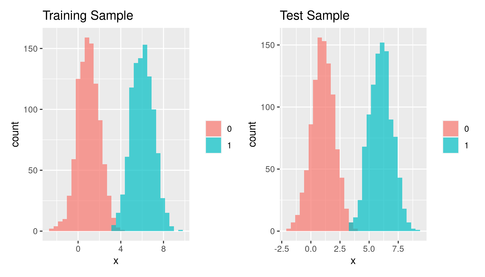
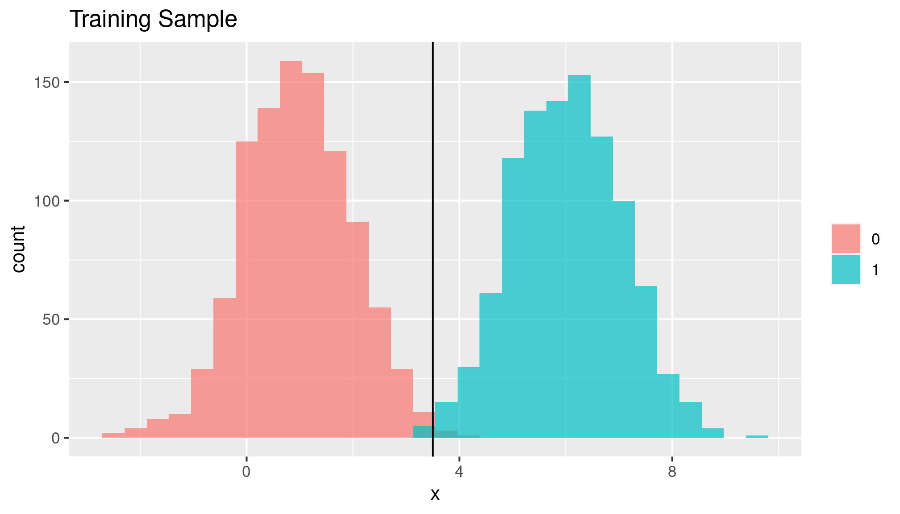

Univariate LDA
This example walks through using linear discriminant analysis to classify observations in a two-class univariate setting with (idealized) generated data.
Theory
The LDA classifier uses estimates of mean and variance for each class as well as discriminant functions to determine the probability that an observation is of a particular class. The LDA classifier then assigns to each observation that class for which the estimated probability of membership is highest.
LDA assumes equal variance between classes. The theory discussion and example reflect this.
Bayes’ Theorem
The general LDA model explored here and in Elements of Statistical Learning is based on Bayes’ theorem for continuous variables. Since we have normal data, we use the normal probability density function (for each class, respectively) as our probability function. Taking Bayes’ theorem
where \(k\) represents one class and \(j\) all others, \(\pi_k\) represents the prior probability of class \(k\), and \(f(\cdot)\) is some probability function, we substitute the normal PDF for \(f(\cdot)\) and rewrite
where \(\color{red}{\pi}\) is literally the value pi (as used in the normal PDF), not a prior probability.
In this example, we only have two classes and we will set \(\sigma_k = \sigma_l\).
A Bayes decision boundary is a boundary between classes along which the classifier determines the probability of class membership to be equal, i.e. \(\Pr(Y = k|X = x) = \Pr(Y = l|X = x)\).
Discriminant Functions
So where does the “discriminant” in LDA come from? How does LDA divide between classes? In the two-class case like this example, we can use the log of the ratio of the probabilities to get our discriminant functions for each class. Taking the ratio of the probabilities…
…and taking the log of the ratio…
…we can build a general formula for finding our discriminant functions. Plugging in the normal PDF for \(f(\cdot)\) in this case allows for quite a lot of simplification.
Remember the Bayes decision boundary? The LDA decision boundary also exists where the probability of an observation being class \(k\) is equal to its probability of being class \(l\) in the two-class case, but using the sample data. If we think of our log-ratio in this way (in which case the ratio is 1 and so the log of the ratio is 0) and evaluate on the boundary then we can easily use the above expression to find our discriminant functions.
\(\delta_k(x)\) and \(\delta_l(x)\) are our discriminant functions which we use to classify observations. We use a simple decision rule for classification: if for observation \(x_i\) the \(k\) discriminant function evaluates greater than the \(l\) discriminant function then we assign \(x_i\) to class \(k\).
Data Generation
We’ll generate train and test data for two classes (coded 0/1): 1,000 normally-distributed observations for each class with differing means for each class but equal variances.
means <- sample.int(6, 2, replace = FALSE)
population0_mean <- min(means)
population0_sd <- 1
population1_mean <- max(means)
population1_sd <- 1
c0_train <- tibble(y = 0,
x = rnorm(1000,
mean = population0_mean,
sd = population0_sd))
c1_train <- tibble(y = 1,
x = rnorm(1000,
mean = population1_mean,
sd = population1_sd))
c0_test <- tibble(y = 0,
x = rnorm(1000,
mean = population0_mean,
sd = population0_sd))
c1_test <- tibble(y = 1,
x = rnorm(1000,
mean = population1_mean,
sd = population1_sd))
train_sample_df <- bind_rows(c0_train, c1_train)
test_sample_df <- bind_rows(c0_test, c1_test)We can easily visualize the distributions of our class-wise populations:
population_density <- ggplot(data.frame(x = c(population0_mean - 3 * population0_sd,
population1_mean + 3 * population1_sd)),
aes(x)) +
stat_function(fun = dnorm,
aes(color = "Class: 0"), size = 1.25,
args = list(mean = population0_mean, sd = population0_sd)) +
stat_function(fun = dnorm,
aes(color = "Class: 1"), size = 1.25,
args = list(mean = population1_mean, sd = population1_sd)) +
scale_color_brewer(palette = "Dark2") +
labs(title = "Population Densities of Two Classes") +
theme(legend.title = element_blank())
population_density
Let’s also quickly visualize the train and test data:
train_sample_histogram <- ggplot(train_sample_df) +
geom_histogram(aes(x = x, fill = as.factor(y)),
alpha = .7,
position = "identity") +
scale_color_brewer(palette = "Dark2",
labels = c("Class: 0", "Class: 1")) +
labs(title = "Training Sample") +
theme(legend.title = element_blank())
test_sample_histogram <- ggplot(test_sample_df) +
geom_histogram(aes(x = x, fill = as.factor(y)),
alpha = .7,
position = "identity") +
scale_color_brewer(palette = "Dark2",
labels = c("Class: 0", "Class: 1")) +
labs(title = "Test Sample") +
theme(legend.title = element_blank())
train_sample_histogram + test_sample_histogram
Implementation
Bayes Decision Boundary
We’ll use the Bayes classifier as a comparison for our LDA. As covered in the theory section the Bayes classifier simply assigns an observation to the class for which an observation has the highest prior probability of belonging. The Bayes decision boundary is the boundary for which the probability of an observation being classified by the Bayes classifier is equal among classes; in this case, we will only have one boundary because we only have two classes.
We’ll compute the optimal Bayes decision boundary from the population data to compare our LDA against. In this case, since we only have two classes and one independent variable/predictor, it’s easy:
bayes_decision <- (population0_mean ^ 2 - population1_mean ^ 2) /
(2 * (population0_mean - population1_mean))We can easily add this optimal boundary to our population density plot and histogram. Unsurprisingly, the decision boundary lies where the two PDFs meet:
population_density + geom_vline(xintercept = bayes_decision,
color = "black")
train_sample_histogram + geom_vline(xintercept = bayes_decision,
color = "black")
LDA Decision Boundary
For our estimates of the mean and variance we use the empirical (i.e., data/sample-derived) class-specific means and standard deviations. Even though the class variances are equivalent in this case we will treat them separately for thoroughness.
We also need to calculate the empirical prior probability that an observation belongs to each class. In this case, both will be 0.5 since we have equal samples but we will again calculate these separately for thoroughness.
class_0_mean <- mean(train_sample_df$x[train_sample_df$y == 0])
class_0_var <- var(train_sample_df$x[train_sample_df$y == 0])
class_1_mean <- mean(train_sample_df$x[train_sample_df$y == 1])
class_1_var <- var(train_sample_df$x[train_sample_df$y == 1])
class_0_prior <- length(train_sample_df$x[train_sample_df$y == 0]) /
length(train_sample_df$x)
class_1_prior <- length(train_sample_df$x[train_sample_df$y == 1]) /
length(train_sample_df$x)Building our discriminant functions as specified in the previous section is simple. We’ll write these as functions.
d0 <- function(x){
x * (class_0_mean / class_0_var) - (class_0_mean ^ 2 / (2 * class_0_var ^ 2)) +
log(class_0_prior)
}
d1 <- function(x){
x * (class_1_mean / class_1_var) - (class_1_mean ^ 2 / (2 * class_1_var ^ 2)) +
log(class_1_prior)
}Then we can build our simple decision rule function, assigning an observation to class \(k\) if \(\delta_k(x) > \delta_l(x)\) and vice versa:
LDA <- function(x){
score_0 <- d0(x)
score_1 <- d1(x)
ifelse(score_0 > score_1, 0, 1)
}Then we can apply our LDA function over our training data to classify the observations:
train_sample_df$predicted_y <- apply(train_sample_df[,2], MARGIN = 1, LDA)Because our discriminant functions are linear in \(x\), we can also solve for the value of \(x\) that acts as our LDA boundary:
LDA_decision <- (class_0_mean ^ 2 / (2 * class_0_var) -
class_1_mean ^ 2 / (2 * class_0_var) +
log(class_1_prior) - log(class_0_prior)) /
(class_0_mean / class_0_var - class_1_mean / class_1_var)And we can easily visualize both our (population-based) Bayes decision boundary and our (sample-based) LDA decision boundary:
train_sample_histogram +
geom_vline(xintercept = bayes_decision,
color = "black") +
geom_vline(xintercept = LDA_decision,
color = "black",
linetype = "longdash") +
labs(subtitle = "Solid line: Bayes (optimal) decision boundary\nDashed line: LDA decision boundary")
Testing
Using the decision boundary from our LDA model applied to the training data, we can simply and easily classify the test data observations:
test_sample_df$predicted_y <- if_else(test_sample_df$x < LDA_decision,
0, 1)What’s LDA’s misclassification rate for the test data in this case?
LDA_misclass_rate <- nrow(test_sample_df[test_sample_df$y !=
test_sample_df$predicted_y,]) /
nrow(test_sample_df)
LDA_misclass_rate * 100## [1] 0.35It’s certainly not perfect! But how imperfect is it? Since we’re using Bayes’ classifier on the population data as our standard, we can apply its decision rule to the test data and calculate its misclassification rate.
test_sample_df$bayes_predicted_y <- if_else(test_sample_df$x < bayes_decision,
0, 1)
bayes_misclass_rate <- nrow(test_sample_df[test_sample_df$y !=
test_sample_df$bayes_predicted_y,]) /
nrow(test_sample_df)
bayes_misclass_rate * 100## [1] 0.35Of course, it is possible for LDA to “outperform” the optimal Bayes classifier depending on the train and test samples, but the Bayes classifier here in a sense represents the “true” optimal classifier since it is coming from population data.